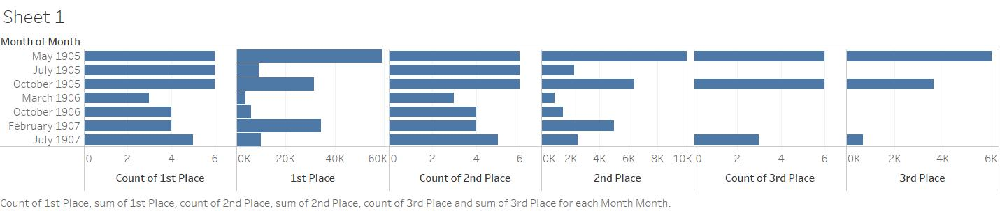

Horse Racing in 1907

Horse racing in Egypt during the early 1900s appeared to be an interesting sport of study to me. It included my interest in sports that I shared with the rest of my group. As for the reason why I specifically chose this, it was because I reasoned that horse back racing must have been quite popular during those times which would make for an equally enjoyable and manageable form of study. While looking through the text, it is evident that they do not officially play sports like we do here in the U.S. today. For instance, they do not take many things into consideration, such as variable handicaps as well as the weights of the actual people riding the horse. This is rather quite important considering a horse is not a car. Why these matter is because even in professional race car drivers, just being a leaner individual allows your car to effectively lose drag. This is somewhat negligible in say a street race but is practically essential in races that use very accurate and miniscule readings such as milliseconds.
To relate this back to the topic at hand, the race time tracking that take place in Egypt at that time are vastly inferior. This leads me to believe that they either have an understandable technological disadvantage or that they treat this as a mostly recreational/ semi professional event. I could possibly conclude, however, that it is a recreational event simply when looking at the time intervals between each race. The races all take place within roughly 30 minutes of each other. This does not allow any time for proper cleaning, shoveling of road, or any other professional changes done to ensure that it stays consistent through each race. Curiously enough, the audience also does not seem to value variety. This is seen when looking at how formulaic the text in the newspaper is. It follows the same pattern each race and even includes the same words about how, “Arab ponies have never won a race of any value.” This stagnation is even seen in the types of horses they use. Consistently as they put it, the Arab horses do not win, by quite a significant margin. In fact, most times it is the Galloway horses that triumph as they are the pure-bred ones. With these in mind, it does not seem as though they are trying to attract newer audiences or even change anything as the formula persists throughout months and years. Instead, it seems to have a following that much like its formula seems to remain largely unchanged as time goes by. Which leads me to the first weakness of this topic. As with anything that pertains to history, there is an innate issue with accuracy here. It is hard to determine whether this formula was made on purpose and is made that way for ease of reading throughout the multiple issues that this takes place, or if instead the writers simply did not want to creatively document it differently from issue to issue. Regardless of the reason, this makes it hard for a student to gather up his data simply due to the unusualness in how this data is presented. Likewise, prize pools can be systematically repeated throughout races as well. This adds another formulaic variable that makes this sport seem rather dull on the surface. In this sense, if a student were to look at this only through what is written on the newspaper, the sport would not look interesting enough to warrant even a second reading from a different issue and would beg the question why someone would not just guess their own results. Especially when there is quite frankly an 100% certainty that indeed the Arab pony will not win the day. With this being said, there are still some differences between the races. Such as the names of the races themselves. Though they follow the same standard naming schemes of “plates”, they still do have different types of plates depending on the months/seasons they are raced in. Likewise, the prize pool variates in correspondence with the plate names. When looking at the May 1905 races we see that there is a lot more at stake here. It practically dwarfs the others in terms of monetary value in the first and second place prize earnings. Likewise, it seems that in July 1905 there was a very significant drop-off in the prize earnings. It went from about 60k to just under 10k. This may be due to a reduction in the prize earnings due to popularity or simply could be because of less overall races. Luckily I have this data and interestingly enough, they both have the same races. It is 6 for both, meaning July was really just a year that awarded a lot less money for first place This is consistent even when compared with other dates. However, Monday is still an anomaly since it greatly exceeds any other prize offerings from the other months. The months of March 1906, October 1906, and July 1907 are what I would consider to be very average months. They have nothing special between any of them in terms of prize pools for both first and second place. This leads me to believe that May 1905, October 1905, and February 1907 are the strange ones in terms of the prize earnings. This is not too surprising however, since it did not seem like quite a popular sport as it was mostly amateurish and very formulaic.
Karl-Frederick Roche
Student
The author, a student at Florida State University, was enrolled in the digital microhistory lab in fall 2019.